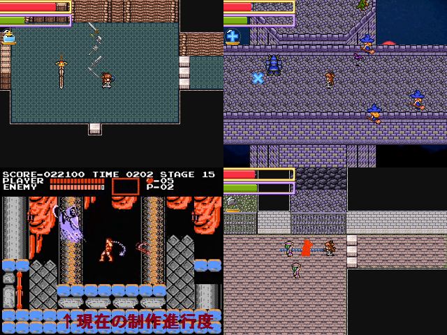

 |
|
| 作者：大富豪の大貧民役 | |
| ジャンル：見下ろしアクション | |
| ツクール：2000 | |
| 作者コメント： 近頃、ポテチ大陸で相次ぐ失踪事件。老若男女問わずに突如街や村から消えるという。 その謎の事件の真相は、混沌の神の狂信者による「イケニエ」と称する誘拐、殺人であった。 この事を知らぬ王国は総力を尽くすも、未だに真相を掴めずにいた… 誰にも知られていない森の奥。「混沌城」と呼ばれる屋敷に二人の人影。 普段は闇商人と名乗る、「エビルハンター」ダークネスとその親友スターライト。 彼女らは裏世界の情報網で事の真相をいち早く知り、 そして混沌神討伐の為立ち上がったのだ。 混沌の神が狂信者の操り人形となって地上に降臨する時は近い。 銀の鎖鞭と聖なる道具を持ち二人は暗黒の城へ身を投じるのであった。 紅白2014の「混沌ノイケニエ」やってなくても全然大丈夫です。 でも間に合うかどうかすごい怪しいです。 たぶんFC悪魔城ドラキュラをノーミスノーダメージで完全クリアできるくらいの確率で 提出できます。 ＝＝＝＝＝＝＝＝＝＝＝＝＝＝＝＝＝＝＝＝＝＝＝＝＝＝＝＝＝＝＝ ただ今制作進行度を悪魔城ドラキュラに例えたらサブウェポン無しで死神戦してる所です。 もうちょっと待ってて下さいお願いします |
|
| 管理人コメント： ﾍﾟﾎﾟｩ |
|
| ダウンロード(8.94MB_06/01更新) / 感想掲示板 |
|
| 前の作品 / 次の作品 / TOPへ戻る | |